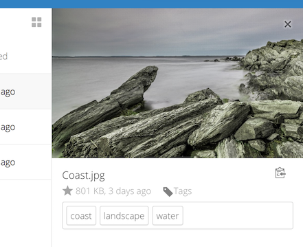
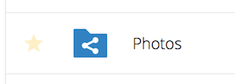
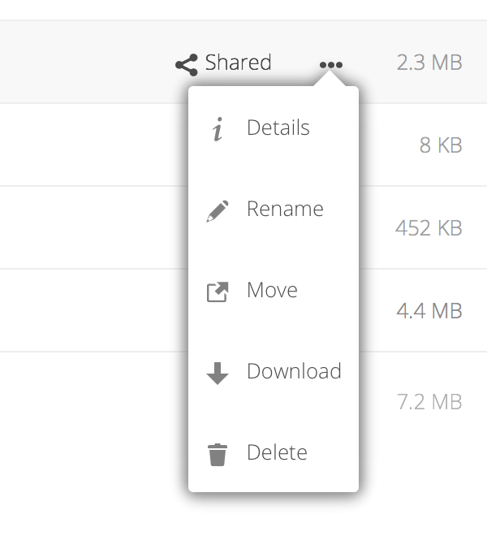
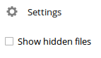

Accessing your files using the Nextcloud Web interface
You can access your Nextcloud files with the Nextcloud Web interface and create, preview, edit, delete, share, and re-share files. Your Nextcloud administrator has the option to disable these features, so if any of them are missing on your system ask your server administrator.

Tagging files
You can assign tags to files. To create tags, open a file to the Details view. Then type your tags. To enter more than one tag press the return key after creating each tag. All tags are system tags, and are shared by all users on your Nextcloud server.

Then use the Tags filter on the left sidebar to filter files by tags:

Video player
You can play videos in Nextcloud with the Video Player app by simply clicking on the file. Video streaming by the native Nextcloud video player depends on your Web browser and the video format. If your Nextcloud administrator has enabled video streaming, and it doesn’t work in your Web browser, it may be a browser issue. See https://developer.mozilla.org/en-US/docs/Web/HTML/Supported_media_formats#Browser_compatibility for supported multimedia formats in Web browsers.

File controls
Nextcloud can display thumbnail previews for various file types, such as images, audio files, and text files. The specific types supported are up to the server administrator. Hover your cursor over a file or folder to expose the controls for the following operations:
- Favorites
Click the star to the left of the file icon to mark it as a favorite:

You can also quickly find all of your favorites with the Favorites filter on the left sidebar.
- Overflow Menu
The Overflow menu (three dots) displays file details, and allows you to rename, download, or delete files:

The Details view shows Activities, Sharing, and Versions information:

The Settings gear icon at the lower left allows you to show or hide hidden
files in your Nextcloud Web interface. These are also called dotfiles, because
they are prefixed with a dot, e.g. .mailfile. The dot tells your operating
system to hide these files in your file browsers, unless you choose to display
them. Usually these are configuration files, so having the option to hide them
reduces clutter.

Previewing files
You can display uncompressed text files, OpenDocument files, videos, and image files in the Nextcloud embedded viewers by clicking on the file name. There may be other file types you can preview if your Nextcloud administrator has enabled them. If Nextcloud cannot display a file, it starts a download process and downloads the file to your computer.
Sharing status icons
Any folder that has been shared is marked with the Shared overlay icon.
Public link shares are marked with a chain link. Unshared folders are not marked:

Creating or uploading files and directories
Upload or create new files or folders directly in a Nextcloud folder by clicking on the New button in the Files app:

The New button provides the following options:
- Up arrow
Upload files from your computer into Nextcloud. You can also upload files by dragging and dropping them from your file manager.
- Text file
Creates a new text file and adds the file to your current folder.
- Folder
Creates a new folder in the current folder.
Selecting files or folders
You can select one or more files or folders by clicking on their checkboxes. To select all files in the current directory, click on the checkbox located at the top of the files listing.
When you select multiple files, you can delete all of them, or download them as
a ZIP file by using the Delete or Download buttons that appear at the
top.
Megjegyzés
If the Download button is not visible, the administrator has
disabled this feature.
Filtering the files view
The left sidebar on the Files page contains several filters for quickly sorting and managing your files.
- All files
The default view; displays all files that you have access to.
- Favorites
Files or folders marked with the yellow star.
- Shared with you
Displays all files shared with you by another user or group.
- Shared with others
Displays all files that you have shared with other users or groups.
- Shared by link
Displays all files that are shared by you via public link.
- External Storage (optional)
Files that you have access to on external storage devices and services such as Amazon S3, SMB/CIFS, FTP…
Moving files
You can move files and folders by dragging and dropping them into any directory.
Comments
Use the Details view to add and read comments on any file or folder. Comments are visible to everyone who has access to the file: